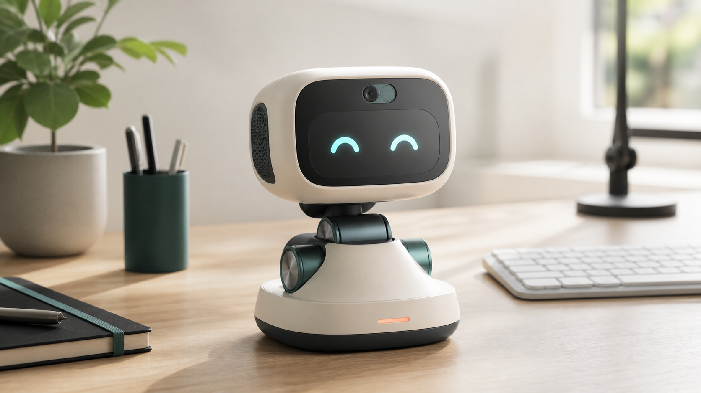

Grind Buddy
一个能感知眼神、理解状态、用动作和小声音回应你的桌面伙伴。它不打扰你，但会在你看向它时，看见你。

职场情绪压力存在，但办公室里没有自然出口。
多数情绪产品要求用户主动打开、主动输入、主动表达；但在办公场景里，真正需要的是低摩擦、低打扰、可被动存在的陪伴。
不能随意倾诉
办公室里表达脆弱、抱怨或崩溃都有社交成本。
主动使用门槛高
App 和聊天机器人需要打开、输入、组织语言，越低落越不想用。
语音交互尴尬
智能音箱式开口对话不适合开放办公环境，也容易打扰他人。
用户不一定需要一直聊天，但需要被看见。
核心产品：一个安静但有生命感的桌面伙伴。
Grind Buddy 不以“效率助手”为第一定位，而以“办公桌上的情绪陪伴”为入口。
眼神接触
用户看向设备时，它立刻转头回应。正常使用无需按钮、App 或唤醒词。
非语言表达
通过三轴云台动作、屏幕眼睛和极轻声音表达情绪，适合办公室。
长期演化
设备会根据作息、注视、疲惫和互动习惯形成个性化行为。
典型使用场景
| 上班坐下 | 它轻微抬头，用眼睛和小声音欢迎你回来。 |
|---|---|
| 开会受挫 | 你看向它，它不说教，只用轻微低头和柔和眼神陪你一下。 |
| 深度专注 | 它识别你长时间在场且不互动，进入低打扰的呼吸感待机。 |
| 离开工位 | 它用克制的动作和声音告别，等待你回来。 |
| 隐私休眠 | 扣下物理摄像头盖后，设备立刻休眠；叫它名字时只抬两下头表示听见。 |
技术架构：本地马上回应，大模型慢慢理解。
K230
摄像头、人脸检测、面部朝向、表情疲惫识别、情绪状态机。
ESP32-S3
三轴云台、动作词汇库、屏幕表情、声音、唤醒词、BLE/WiFi/OTA。
大模型
异步意图理解、每日总结、用户模型更新，不阻塞实时交互。
实时链路
- 人脸出现，设备识别用户。
- 检测到眼神接触，立即转头回应。
- 本地状态机决定动作、表情和声音。
异步理解
- 积累当天观察数据。
- 定期发送给大模型做摘要和参数更新。
- 逐步形成用户专属行为倾向。
差异化：不是聊天机器人，不是效率助手。
对比聊天机器人
聊天机器人需要主动输入；Grind Buddy 用眼神接触进入互动。
对比智能音箱
智能音箱以语音命令为核心；Grind Buddy 以安静陪伴和非语言表达为核心。
对比桌面玩具
普通玩具没有持续感知和长期记忆；Grind Buddy 的价值会随使用时间增强。
商业化方向
硬件销售
面向桌搭、智能硬件和情绪价值消费人群，首代产品以硬件销售为主。
可选订阅
个性化模型、长期记忆备份、新动作包、声音包和情绪趋势回顾。
企业渠道
科技公司福利、创意团队桌面设备、心理健康福利和企业礼品。
路线图
完成眼神接触触发转头、5-8 个核心动作、屏幕眼睛和摄像头盖休眠。
实现 WAITING、IDLE、ATTENTIVE、FOCUSED、TIRED、HAPPY、LONELY 状态机。
10-30 台内部测试机，验证留存、互动频次、声音克制和主观情绪反馈。
结构件优化、器件选型、BOM 成本评估、工业设计和量产可行性验证。
1 分钟口播稿
Grind Buddy 是一个放在办公桌上的情绪陪伴机器人。我们的用户是在办公室里长期承受压力的年轻职场人，他们不一定需要一个一直聊天的 AI，但需要一个不会评判、不会打扰、却能感知自己状态的陪伴者。
这个产品的核心交互是眼神接触。用户看向它时，它会立刻转头回应；用户不看它时，它就安静地待在旁边。它通过三轴云台动作、屏幕眼睛和非常轻的非语言声音表达情绪，不需要用户打开 App，也不需要在办公室里尴尬地说话。
技术上，我们用 K230 做本地视觉感知和情绪状态机，用 ESP32-S3 控制云台、屏幕、声音和唤醒词，大模型只做异步理解和长期用户建模，不影响实时体验。第一阶段目标是验证最关键的 30 秒体验：当你看向它时，你能感觉到它也在看你。